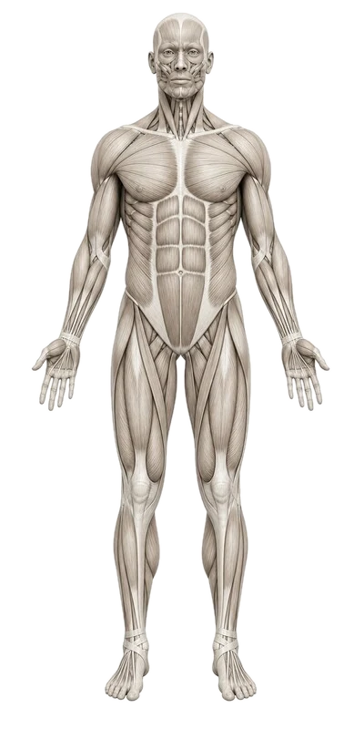
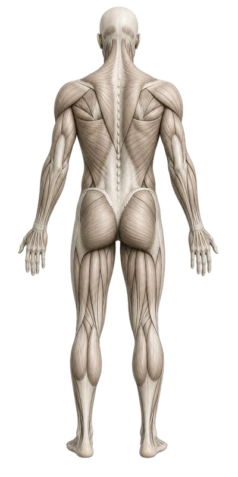

운동과 주간 세트 수를 넣으면 근육별 유효 세트(주동근 1, 협응근 0.5로 계산)와 그에 따른 근두께 증가 추정 범위를 보여줍니다. 몸 그림의 근육을 누르면 상세 정보와 그 근육에 좋은 운동이 나옵니다.
‘세트/주’는 일주일 동안 그 운동을 한 총 세트 수입니다 (예: 주 2회 × 3세트 = 6). 근성장에는 실패 근처까지(2–3회 남김) 하는 세트가 대부분의 효과를 냅니다.


근두께 증가(%)는 메타분석의 용량-반응 경향(주당 세트가 늘수록 효과가 커지지만 점점 둔화)을 단순화한 추정 범위입니다. 같은 운동을 해도 사람마다 성장량 차이가 매우 크므로(연구에서 0%에서 50% 이상까지) 가운데 값보다 범위를 보세요.
원하는 체형을 고르면, 목표 근육은 주 10–16세트, 나머지는 유지 볼륨(주 ~6세트)이 되도록 운동과 세트를 자동으로 배분하고, 각 근육을 주 2회 이상 자극하도록 요일에 나눕니다.
거북목(전방 머리 자세)은 머리가 앞으로 나갈수록 목이 버텨야 하는 하중이 커집니다. 아래 슬라이더로 확인하고, 옆모습 사진으로 내 목 각도(CVA)를 재고, 근거가 있는 교정 운동을 루틴에 넣어보세요.
머리 무게(약 4.5–5.4kg)가 앞으로 기울수록 지렛대처럼 하중이 커진다는 컴퓨터 모델 추정치입니다. 실제 측정값이 아니며, 짧은 시간 숙이는 것 자체가 해롭다는 뜻은 아닙니다. 오래 유지되는 자세가 문제입니다.
편하게 선 옆모습 사진을 올린 뒤 ① 귀 구슬(이주) ② 목 뒤에서 가장 튀어나온 뼈(C7) 순서로 누르세요. 사진은 기기 밖으로 전송되지 않습니다.
CVA는 C7을 지나는 수평선과 C7→귀를 잇는 선 사이의 각도입니다. 각도가 작을수록 머리가 앞으로 나와 있습니다. 연구마다 기준이 다르지만 대략 48–50° 미만을 전방 머리 자세로 분류하는 경우가 많습니다. 사진 각도·카메라 높이에 따라 몇 도씩 달라질 수 있어요.
국민체조처럼 팔을 옆으로 들어 올리는 동작은 어디까지 올리느냐에 따라 일하는 근육이 달라집니다. 어깨 높이(90°)까지는 주로 삼각근, 그 위부터는 견갑골이 위로 회전하면서 전거근과 하부 승모근이 크게 참여합니다. 슬라이더로 각도를 바꿔보세요.
Wickham 2010(건강한 성인 어깨 외전 근전도)과 Ekstrom 2003의 경향을 단순화한 그림입니다. 근육마다 기준(최대 수의 수축 대비 %)이 달라 근육끼리의 높낮이보다 각도에 따른 변화를 보세요.
맨몸·저강도 체조는 가동성, 혈액순환, 자세 감각에는 도움이 되지만, 근비대 자극은 작습니다. 근육은 가벼운 무게라도 실패 근처까지 반복해야 크게 자랍니다(Schoenfeld 2017). 이 툴에서 국민체조는 근성장 기여를 아주 낮게(×0.1) 계산합니다.
체조의 팔 동작을 근력운동으로 바꾸려면: 엎드려 Y 들기(하부 승모근), 벽 슬라이드(전거근), 가벼운 덤벨 옆으로 들기(측면 삼각근)를 실패 2–3회 전까지.
이 툴의 계산 규칙과 각 규칙이 기대는 연구입니다. 근전도(EMG)가 높다고 반드시 더 크게 자라는 것은 아니며(Vigotsky 2018), 모든 수치는 개인 차이가 큰 평균 경향의 단순화입니다.
이 툴은 교육·계획용 추정 도구이며 의학적 진단이나 처방이 아닙니다. 목·어깨·허리 통증, 저림, 수술 이력이 있다면 운동 전에 의사나 물리치료사와 상의하세요. 결과의 숫자는 물리적 측정이나 증명이 아니라 연구 평균을 단순화한 휴리스틱입니다.